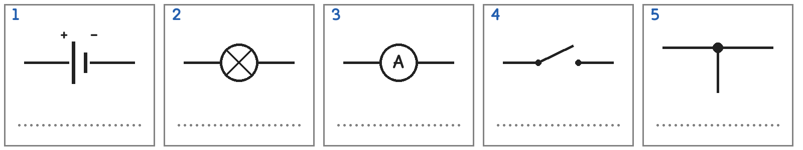
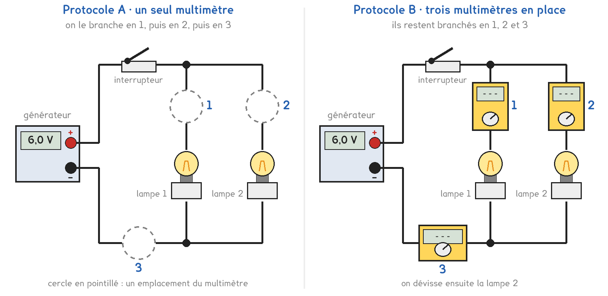

CAP · toutes spécialités · TP commun CAP-01
Quand on allume la deuxième lampe, la batterie débite-t-elle davantage ?
2 figures
Sujet. Sur un vélo, le phare avant et le feu arrière sont branchés sur la même batterie. Le soir, on allume d’abord le feu arrière, puis le phare.
Problématique : quand on allume la deuxième lampe, la batterie débite-t-elle davantage ?
Au laboratoire, la batterie est remplacée par un générateur de 6 V, le feu arrière par une lampe 6 V · 0,1 A, le phare par une lampe 6 V · 0,3 A.
Sur le culot du phare est gravé 6 V · 0,3 A.
a) Compléter le tableau pour les deux inscriptions du culot.
| L’inscription | 6 V | 0,3 A |
|---|---|---|
| La grandeur, entourer | tension · intensité | tension · intensité |
| Son unité, en toutes lettres | ………………………………………… | ………………………………………… |
| L’appareil qui la mesure | ………………………………………… | ………………………………………… |
Un schéma se dessine avec des symboles normalisés : générateur, lampe, ampèremètre, interrupteur, nœud.
b) Écrire sous chaque symbole son nom.

Série · milliampères et ampères. On divise par 1 000 pour passer en ampères, on multiplie par 1 000 pour passer en milliampères. Le premier est fait.
| 100 mA = 0,1 A | 300 mA = …………………… A | 40 mA = …………………… A |
|---|---|---|
| 0,4 A = …………………… mA | 0,25 A = …………………… mA | 0,04 A = …………………… mA |
Deux protocoles répondent à la même question. Une partie de la classe prend A, l’autre prend B, et on compare à la fin.

Protocole A · un seul multimètre, qu’on déplace. On le branche en 1, puis en 2, puis en 3. On ouvre l’interrupteur avant chaque déplacement.
Protocole B · trois multimètres en place. Les trois courants se lisent en même temps. On dévisse ensuite la lampe 2 en regardant les écrans.
c) Compléter le tableau pour comparer les deux protocoles.
| Protocole A | Protocole B | |
|---|---|---|
| Nombre de multimètres | …………………… | …………………… |
| Les trois courants se lisent en même temps | oui · non | oui · non |
| Sa limite, entourer | trois branchements · trois appareils | trois branchements · trois appareils |
Le choix se fait maintenant, avant de toucher au matériel. Le professeur peut imposer le protocole qui reste libre.
d) Entourer votre protocole, puis la raison.
Protocole A · Protocole B
parce que : le poste n’a qu’un multimètre · on veut voir le courant changer en direct
Avant de mesurer, on fait une hypothèse sur le courant I dans le fil du générateur.
e) Quand on allume la deuxième lampe, le courant I, entourer :
augmente · ne change pas · diminue
Avant de commencer
Le générateur est réglé sur 6 V et reste éteint pendant qu’on branche.
Le multimètre se branche dans le fil, jamais aux bornes d’une lampe. Fils sur les bornes COM et 10 A, sélecteur sur 10 A continu.
Le professeur vérifie le montage avant la mise sous tension.
Le schéma porte le générateur, l’interrupteur, les deux lampes et le multimètre en position 3.
f) Schématiser votre montage avec les symboles normalisés.
Le schéma se dessine sur la feuille du TP.
g) Relever les mesures, en ampères.
| Les courants | I1 (A) | I2 (A) | I (A) |
|---|---|---|---|
| les deux lampes allumées | |||
| la lampe 2 dévissée | 0 |
h) Les deux lampes allumées : calculer, puis entourer.
I1 + I2 = …………………… + …………………… = …………………… A
On a mesuré I = …………………… A. Donc I1 + I2 est plus petit que · égal à · plus grand que I.
i) Quand on allume la lampe 2, que devient le courant I ?
I passe de …………………… A à …………………… A. Hypothèse e confirmée : oui · non
j) Relever le courant I d’un groupe qui a pris l’autre protocole.
I = …………………… A. Le même que le vôtre, à 0,02 A près : oui · non
Deux élèves mesurent le courant de la lampe 1. L’un lit 0,10 sur le calibre 10 A, l’autre lit 100,0 sur le calibre 200 mA.
k) Ont-ils mesuré le même courant ? Entourer : oui · non
Série · I = I1 + I2. Attention aux unités. Le premier est fait.
| I = 0,1 A + 0,3 A = 0,4 A | I = 0,2 A + 0,5 A = …………………… A |
|---|---|
| I = 0,25 A + 0,25 A = …………………… A | I = 150 mA + 350 mA = …………………… mA |
| I = 50 mA + 0,2 A = …………………… A | 1 A = 0,4 A + …………………… A |
Pour finir, on revient au vélo.
l) Répondre à la problématique en une phrase.
Ce que ce TP a établi, à écrire sous la dictée du professeur :
À RETENIR
À compléter en classe, sur la feuille du TP.
TP commun de physique-chimie, toutes spécialités. Le travail se fait sur la feuille du TP : cette page en est la version à l'écran, sans les lignes à remplir. Rien n'est enregistré.